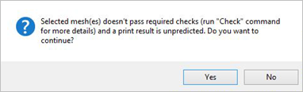

If you are running Windows® 8.1 or higher an additional Print command will appear on the menu with the icon shown on the left. This command allows you to print directly to an attached 3D Printer using the default printer driver. Refer to the Basic Procedure and the available options in the Print dialog below.
 The Print Mesh command will automatically performed the same checks that are performed by the Check command. If the mesh fails ANY of these checks, the following message will appear. The Print Mesh command will automatically performed the same checks that are performed by the Check command. If the mesh fails ANY of these checks, the following message will appear.

|
1.Select mesh(es) and press Enter. |
|
Screen Pick
|
Optional Information
|
Step 1
|
Pick the Print icon from the 3D Print tab.
|
Steps 1 & 2 can be performed in reverse order. You can select meshes first and then select the command icon.
|
Step 2
|
Select the mesh you want to print.
|
Step 3
|
Select the desired print options from the Print dialog and then press Print.
|
-
|
|
The following command options are available from the Browser:
3D Printers
This list shows the 3D Printer Drivers installed on your machine. Select a 3D printer from the list to print to.
Printer Settings
The settings and options you will see in the dialog are dependent on the 3D Printer Driver installed on your machine and the 3D Printer you have selected.
|